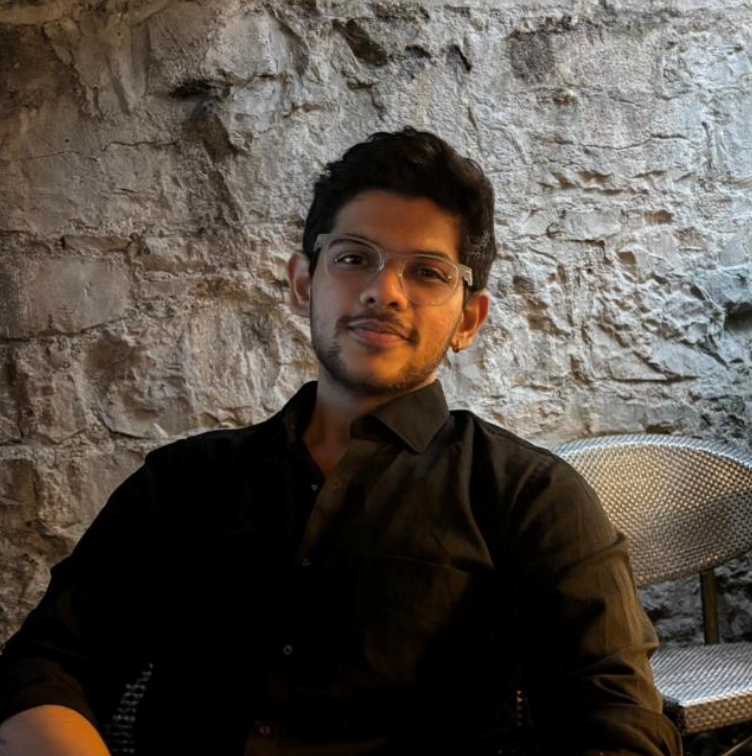

rishirats@linux:~$ cat profile.txt
Adaptable, friendly, energetic, punctual and reliable engineer with expertise in networking, IT, cybersecurity, electronics, IoT and embedded systems is presently enrolled in University of Galway master's program in cybersecurity risk management.
Worked in startups.
Likes to be enabler of good things with business and technology.
Excited to support by sharing knowledge and enthusiasm for development in businesses and technology for betterment in the world with skills in research and technical problem-solving.
rishirats@linux:~$ echo "Connect:"
rishirats@linux:~$